Orianna
Orianna
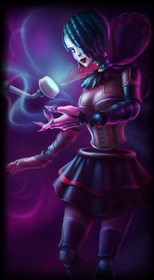
Gothic Orianna
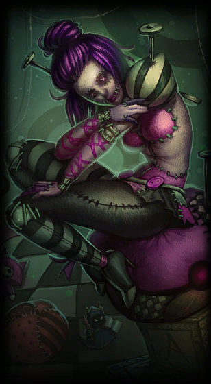
Sewn Chaos Orianna
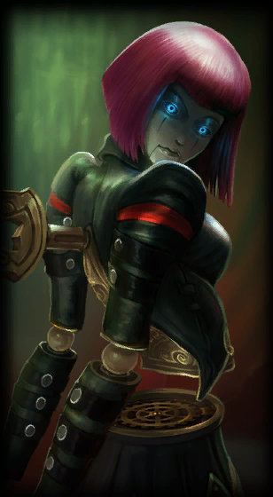
Bladecraft Orianna
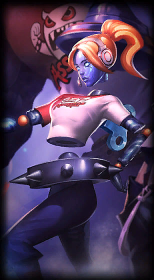
TPA Orianna
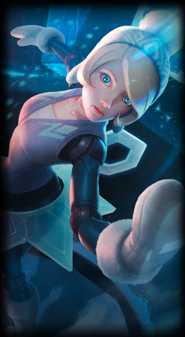
Winter Wonder Orianna
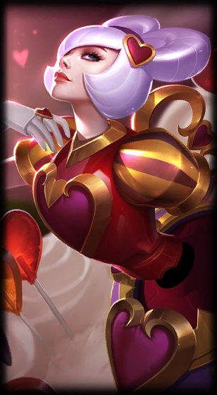
Heartseeker Orianna
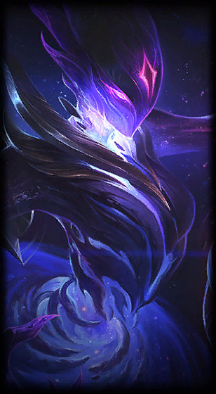
Dark Star Orianna
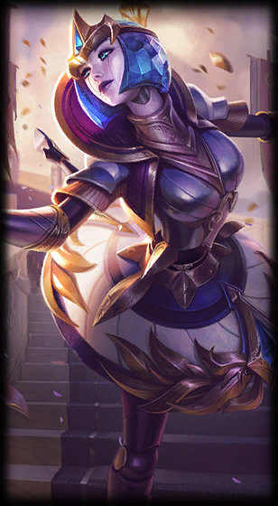
Victorious Orianna
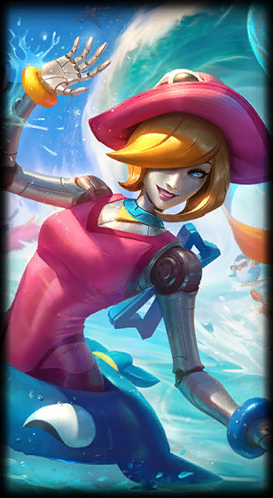
Pool Party Orianna
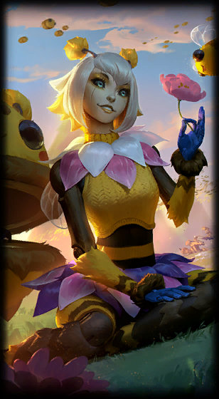
Orbeeanna
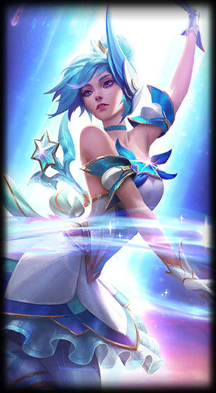
Star Guardian Orianna
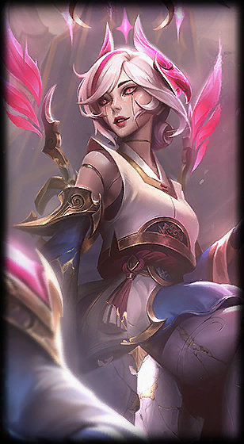
T1 Orianna
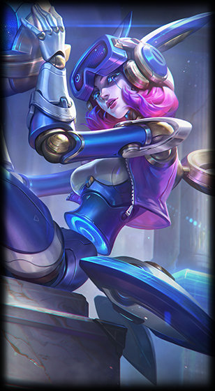
Risen Legend Orianna
Once a curious girl of flesh and blood, Orianna is now a technological marvel comprised entirely of clockwork. She became gravely ill after an accident in the lower districts of Zaun, and her failing body had to be replaced with exquisite artifice...